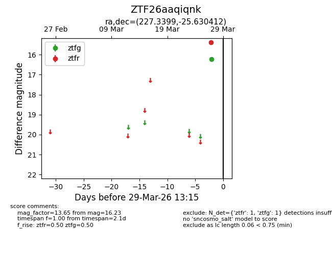
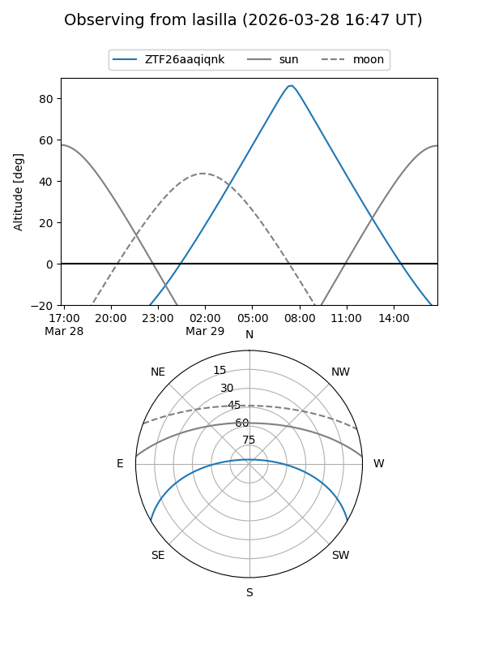
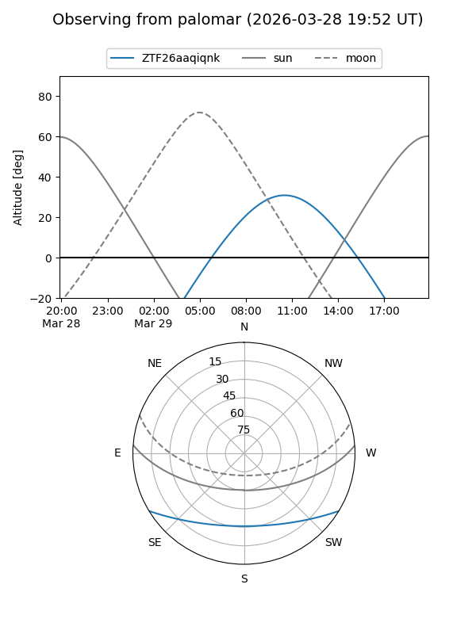

ZTF26aaqiqnk
Target ZTF26aaqiqnk at 2026-03-29 13:18
Aliases and brokers:
FINK: link
Lasair: link
ALeRCE: link
alt names
ZTF26aaqiqnk (ztf,fink_ztf)
Coordinates:
equatorial (ra, dec) = 227.3399,-25.63041
equatorial (HMS+DMS) = 15:09:21.59,-25:37:49.48
galactic (l, b) = (338.1207,+27.65876)
Flags:
Photometry:
last ztfg=16.23, ztfr=15.38
1 ztfg, 1 ztfr detections
Lightcurve

Visibility


Additional plots